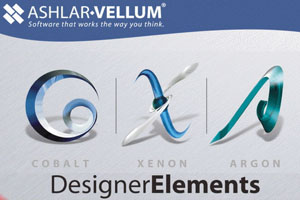

|
ASHLAR-VELLUM
(COBALT, XENON, ARGON, GRAPHITE, NEON ):
COBALT
V6
Ashlar,
tasarýmcýlara, mühendislere ve hatta mucitlere 2D/3D krokileme
, fikir geliþtirme, görselleþtirme, gerçek fotoðraf kalitesinde
render ve hassas mühendislik çizimleri için birbirleriyle
gayet uyumlu araçlar sunmaktadýr. Ashlar'ýn sadece kendisine
has melez katý ve yüzey modelleme özelliði rakipsiz bir esneklik,
güç ve hassasiyet sunarken, obje akrabalýðý ve tarihçe aðacý
kolay tasarým gezintilerine ve çabuk mühendislik deðiþikliklerine
imkan saðlamaktadýr. Ashlar'ýn isteðe baðlý parametrikleri
, tasarýmda yeni varyasyon oluþturmada görülmemiþ hýz kazandýrýr.
Ashlar-Vellum'un bol ödüllü arayüzü, onun kullanmasý ve öðrenmesi
en kolay 3D modelleme yazýlýmý olmasýný saðlar. Artýk elinizde,
sýnýrý hayal gücünüz olan buluþ kabiliyetinizle istediðiniz
þekli oluþturmak için araçlar, iþleminize istediðiniz yöntemden
çözmek için gerekli esneklik, ve iþi bitirebilmek için yeterli
güç var.
Ashlar
size sürüden ayrýlýp kendi tasarým kimliðinizi ortaya koymanýzý
saðlayacak araçlarý sunuyor.
Ayrýca
Cobalt , ünlü Graphite 2D taslaklama programýnýn lisansýný
da içermektedir. Ayrýca Ashlar-Vellum'ýn 97.000 parça , somun,
civata, pul, rondela, pim, kilitli somun, perçin ve yatak
içeren mekanik parçalar kütüphanesi içermektedir. Bütün bu
parçalar hassas 3D katý modeller olup, ANSI, BS, ISO, JIS
ve NF standartlarýnda bulunmaktadýr.
-
Profesyonel 3D Melez Katý ve Yüzey Modelleme
- Ýliþkilendirmeli
parametrik Class -A NURBST yüzey modelleme
- Parametrik
ACIS (Spetial Technology T) Katý modelleme
- Parametrik
Ölçülendirme
- Ýliþkilendirilmiþ
montaj
- Kalýp
Tasarýmý için geliþmiþ katý araçlarý
- Design
Explorer ile geometri tarihçe aðacý
- Geliþmiþ
yapay zeka içeren Drafting Assistant ile X, Y ve Z de yapýþkanlar
- Klasikleþmiþ
Vellum T2D/3D telkafes Parametrik dizayn
- GD&T
ve Bill of meterials
- Yüzey
analiz
- Obje
ve Malzeme tanýmlamalarý
- Import/Export
; ACIS SAT, Pro/E, ParaSolids, IGES, STEP, DXF, DWG, EPS,
AI, CATIA ve diðerleri,
- Ýliþkilendirilmiþ
Photo-realistic rendering
- Kuþ
bakýþý, içinde gezinme, nesne virtual reality ve Panoromik
virtual reality animasyonlarý
- 97.000
3D Makine parçasý kütüphanesi
- 3D
Web yayýnlama ve Web viewer
- ***
CATIA ve Pro/ENGINEER Translate leri (direk data okuma)
sistemin içersinde beraber gelmektedir.
Neden
Cobalt?
- Baþarýlý
ürünlerinizi pazara daha çabuk sunabilirsiniz:
Bütün tasarým programlarý sizin aklýnýzdaki fikir ile üretim
arasýndaki iþlemi hýzlandýrmaya yarar. Cobalt ile diðerleri
arasýnda fark ise, bu ürünlerin deðiþtirilebilmesi ve rafine
edilmesi sýrasýndaki esnekliðidir. Ürünleriniz sadece pazara
çok hýzlý girmekle kalmaz, ayný zamanda baþarýlý da olurlar.
- Buluþ
yeteneðinizi arttýrýn:
Bir tasarýmý çizmeye hangi yoldan karar verirseniz verin,
Cobalt sizin düþünüþ tarzýnýza uyum gösterecek ve aklýnýzdakini
baþarmanýzý saðlayacaktýr. Asla bir iþi yapmak için tek
metoda baðlý kalmayacaksýnýz.
- Öðrenme
zamanýnýzý kýsaltýn:
Her yazýlým kolaydýr... bir programcý olarak düþündüðünüz
sürece! Cobalt size istediðiniz gibi düþünmenize olanak
saðlar çünkü herþey mantýklý ve sezgiseldir.
- Zaten
bitmiþ bir tasarýmý çizmeyin, tasarýmýnýzý 3 boyutta düþünün!
Diðer yazýlýmlar size zaten tasarlamýþ olduðunuz bir fikri
çizmenizi saðlarken, Cobalt size 3 boyutta düþünmenizi,
fikrinizi geliþtirmenizi ve kolayca deðiþtirebilmenizi saðlayacak
araçlar saðlar.
- Tasarýmýnýzý
daha rafine hale getirirken yazýlýmla güreþmeyin:
Drafting Assistant, size 3 boyutta çizmenin bir zevk haline
gelmesi için tasarlandý. Bir iþlem için gerekli mouse týklama
sayýlarý, dialog kutularý ve sizin zamanýnýzý çalacak diðer
þeyler minimuma indirgendi. Böylece istediðiniz þekli çizerken
veya daha rafine hale getirirken, maksimum sayýda olasýlýðý
minimum çalýþma zamanda deneme imkanýna kavuþursunuz.
- Kendi
kiþisel tasarým kimliðinizi oluþturun:
Cobalt'ýn güçlü araçlarýný kullanýrken, endüstri standartlarýnýn
üstüne çýkýp sürüden ayrýlabilirsiniz. Tek bakýþ açýsý yerine
size kendi yolunuzu çizmenizi saðlar.
- Fikirlerinizi
daha baþarýlý bir þekilde pazarlayýn:
Cobalt'taki photo-realistic rendering size 3 boyutlu tasarýmdan
sanal gerçekliðe uzanmanýzý saðlar. Müþterileriniz ve imalattakiler
sizin vizyonunuzu tam olarak görebilirler.
- Ýþ
gücünüzden 100% verim alýn:
Cobalt'ýn kullaným kolaylýðý sayesinde, organizasyonunuzda
her yere yerleþtirilebilir, herkes öðrenebilir.
- Ýstediðiniz
platformda çalýþýn:
Ýster uzun süreli bir Windows kullanýcýsý ister bir Macintosh
fanatiði olun, Cobalt iki platformu da destekler. Platform
deðiþtirmek için ekstra bir maliyeti yoktur.
- Evde
veya iþyerinde veya yolda tek lisansla çalýþmaya devam edin:
Biz biliyoruz ki buluþ yeteneðine sahip insanlar evlerinde
daha fazla iþ yaparlar. Bizim eþi olmayan lisans anlaþmamýz
size yasal olarak programý birden fazla bilgisayara yüklemenize
olanak saðlar, tabii ayný anda sadece bir bilgisayarda çalýþýldýðý
sürece.
Ashlar-Vellum
Modelleme Ürünleri
Ashlar,
Argon Xenon ve Cobalt ile vellum ürün ailesini geniþletiyor.
Bu üç ürün özellikle hassas 3B model oluþturmak veya deðiþtirmek
isteyen tasarýmcýlar için geliþtirildi. Argon temel modelleme
fonskiyonlarýný sunarken, Xenon ve Cobalt belli tasarým iþlemlerini
gerçekleþtirmek için daha geliþmiþ olanaklar ve fonksiyonlar
sunuyor. Argon, Xenon ve Cobalt arasýndaki farklar deðiþik
ihtiyaçlarý olan tasarýmcýlar için seçenek ve performans sunabilmek
amacýyla mevcuttur:
Argon
Argon
modelleme ürünleri için çekirdek yapýyý sunar. ACIS geometri
motoru üstüne inþa edilmiþ yapýsýyla Argon, hassas eðriler,
yüzeyler ve katý modelleme yöntemlerini Vellum'un kullanmasý
kolay arayüzü ile birbirine entegre eder. Tasarýmcýlar eðrilerden
yüzeyler ve katýlar, yüzeylerden katýlar yapabilir, ve bir
çok feature operasyonu ile , blending veya shelling gibi,
modellemelerini daha rafine hale getirebilirler. Argon sadece
geniþ opsiyonlu modelleme araçlarý sunmakla kalmaz, ayný zamanda
datanýzý DXF/DWG STEP, IGES, PRO/E, Parasolids (UG, SolidEdge,
SolidWorks), ve ACIS (AutoCAD, Inventor, Mechanical DeskTop)
çevirmenleri sayesinde diðer CAD/CAM/CAE paket programlarý
ile hassas bir þekilde paylaþmanýzý saðlar.
Xenon
Xenon
Argon çekirdek paketine tasarým datalarý arasýnda akrabalýk
fonksiyonlarý ekler. Akrabalýk, orijinal geometri ile son
þekliniz arasýndaki transparan bir iliþkidir. Bu iliþkiler
bir tarihçe aðacý vasýtasý ile orijinal geometri de yapýlan
bir deðiþiklik durumunda , son þeklinizin de buna uygun olarak
güncellenmesini saðlar. Tarihçe aðacýný eðriler yüzeyler ve
katýlar için Design Explorer penceresini kullanarak görebilirsiniz.
Akrabalýk, tasarým konseptlerini ve iterasyonlar vasýtasý
ile yapýlan modifikasyonlarýn gerçekleþtirilmesinde çok önemli
bir fonksiyondur.
GRAPHITE
Profesyonel
parametric 2D çizim
NEON
WEB
tabanlý grafikler.
Aþaðýdaki
senaryo, akrabalýðýn bir tasarýmcýnýn verimliliðini nasýl
arttýrabileceðinin örneðidir.
- Tasarýmcý
uzayda organik bir þekli tanýmlamak için çeþitli eðriler
çizer.
- Eðrilere
yüzeyler eklenir.
- Yüzeyler
diðer yüzeylerle budanýr veya biçimlenir.
- Yüzeyler
bir birbirlerini kapatacak þekilde yamanýr ve bir katý oluþturulur.
- Gövde
shell ile oyulur ve yüzeyler imalat ihtiyaçlarýna göre taslaklanýr.
- Gövde
kenarlarý 17 tane blend veya chamfer araçlarýndan biri ile
yumuþatýlýr.
- Ön
üst ve isometric görünümleri içieren 2B bir çizim elde edilir.
- Orijinal
eðrilerde modifikasyon ihtiyacý belirir.
- Eðriler
düzeltilir, ve 2 ile 7 arasýndaki adýmlar otomatik olarak
akrabalýk sayesinde güncellenir.
Cobalt
v6
Cobalt
Ashlar Vellum katý modelle programlarýnda yeni jenerasyonu
temsil eder. Cobalt, Xenon'a göre daha fazla çizim kompozisyonu,
montaj modellemesi, malzeme faturasý ve GD&T araçlarý
içerir. Cobalt, endüstri standardý çizimler için seçilmesi
gereken pakettir.
Cobalt'ýn bir diðer önemli özelliði de, denklem yönlendirmeli
parametrik sýnýrlama yönetme fonksiyonudur. Sýnýrlamalarý
kullanarak , tasarýmcý profillerini diðer eðrilere ve/veya
boyutlara göreceli olarak iliþkilendirebilir. Bu fonksiyonun
en çarpýcý yanlarýndan biri de , boyutlara min-max deðerleri
ve adým sayýsýný vererek boyutlandýrma ile animasyon haline
getirebilmek. Aþaðýda Cobalt v5 tarafýndan desteklenen geometric
sýnýrlamalarýn bir kýsmýný görebilirsiniz.
- Referans
sistemine göre yatay, dikey.
- Üstüste,
colineer, paralel veya konsentrik.
- Tanjant,
simetric, dik, ofset ve eþ uzunluklar.
- Yatay,
dikey, paralel, radyal ve çap uzaklýk sýnýrlamalarý.
Daha
fazla bilgi için: www.ashlar.com
Ýrtibat:
Cenk
Türkmen
cturkmen@3dcadcam.com.tr
3D
CAD/CAM TECHNOLOGY
Yalý yolu Sok. Ýsmail Ergin Ýþ Merkezi No: 56/A-4
Üstbostancý Kadýköy / Ýstanbul
Tel: (216) 380 39 48
Faks: (216) 380 01 18
www.3dcadcam.com.tr
|